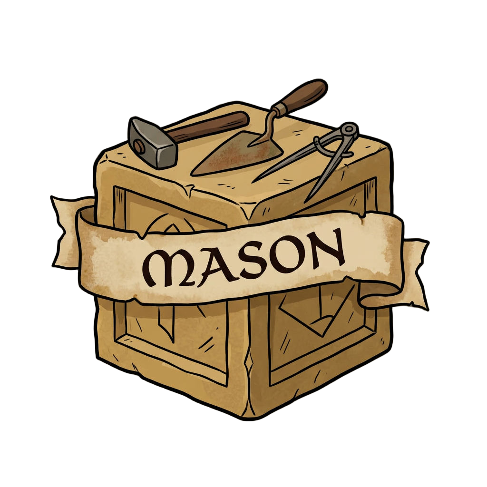

A month ago
Built by talking.
How does it work?
“de ska kännas simple as fuck”
“Ja sluta fråga publicera”
“Pusha och deploya”

?
Interview
Built by talking to AI

Mason was there.0chats
Interview
A month ago
21 days · 37 folders
agent chats.
One has the answer.
What Mason keeps
Said to an agent
Picked up without asking · said twice
Recall call
Hearing you
1 of 4 remembered
ElevenLabs · Text to Dialogue · this week's episode
Gustaf, at the playground
“It does not save a film of the whole day.”
Gustaf's words · the rule Store events, not a film
Disclosure
He was tired. I was there.
github.com/Baltsar/mason